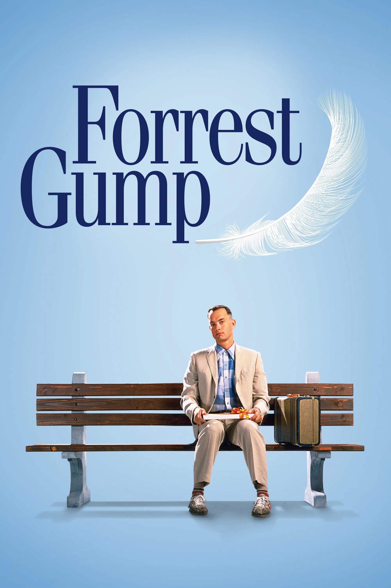

Forrest Gump (1994)

Historia de superación y bondad con Tom Hanks.
la escena del vaso de agua vibrando en Jurassic Park (1993) se logró con una cuerda de guitarra? El equipo colocó una cuerda debajo del tablero del auto y la hizo vibrar para crear el efecto del temblor causado por el T-Rex. ¡Todo sin usar CGI!
Historia de superación y bondad con Tom Hanks.
Basada en una historia real, emotiva y positiva.

Amistad, esperanza y libertad.
Drama sobrenatural con mucha carga emocional.
Biografía dramática sobre matemática y salud mental.